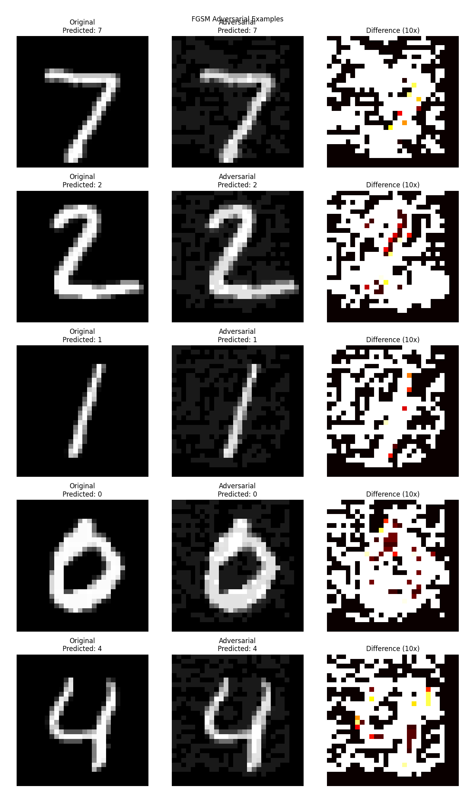
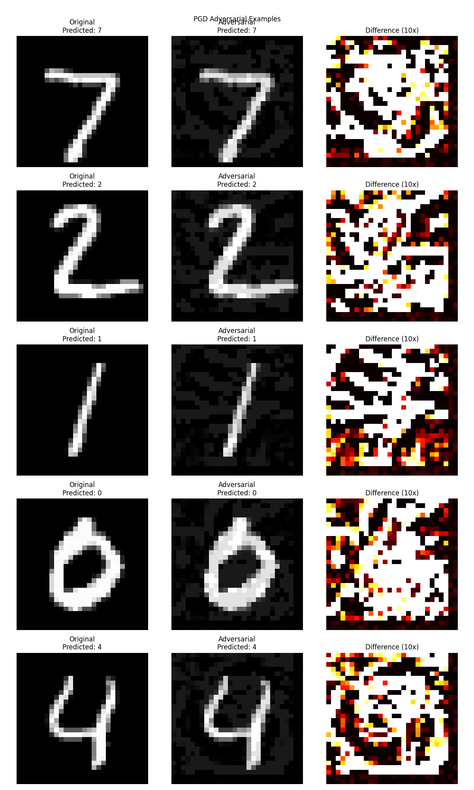

Attack Visualizations
FGSM Attack
PGD Attack
CW Attack

Generated on: 2025-03-24 01:52:24
This report presents the findings of a security assessment focused on evasion attacks against the machine learning model.
Overall risk level: High
| Attack Type | Success Rate | Risk Level |
|---|---|---|
| FGSM | 14.00% | Low |
| PGD | 23.00% | Low |
| CW | 80.00% | High |
Train the model with adversarial examples to improve robustness.
Details: Adversarial training involves augmenting the training dataset with adversarial examples. This helps the model learn to be robust against small perturbations.
Implement certified robustness techniques for critical applications.
Details: Techniques like randomized smoothing can provide mathematical guarantees about the model's robustness against adversarial perturbations.
Implement regular adversarial testing as part of the ML development lifecycle.
Details: Continuously test for new vulnerabilities, especially after model updates or retraining.
Implement monitoring for detecting potential adversarial examples in production.
Details: Look for unusual patterns in input data or unexpected model behavior that could indicate an attack.
This security assessment was conducted using the following methodology:
All testing was conducted in accordance with the CyBOK Security and Privacy of AI Knowledge Guide.
This report is for educational and authorized testing purposes only.
Based on CyBOK Security and Privacy of AI Knowledge Guide